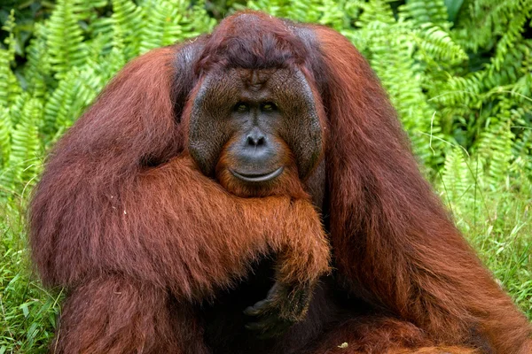
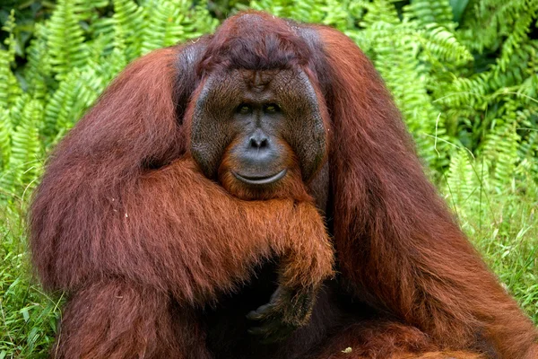

Orangutanlar, dünyadaki en ilginç ve zeki primatlardan biri olarak bilinirler. Borneo ve Sumatra'nın tropik ormanlarında yaşayan bu büyük primatlar, insana en yakın akrabalar arasında yer alır. İki ana türleri bulunur: Borneo orangutanı (Pongo pygmaeus) ve Sumatra orangutanı (Pongo abelii). Her iki tür de kırmızımsı-kahverengi tüylere sahip olup, uzun kolları ve büyük ellere sahiptirler. Bu özellikleri, ağaçlar arasında kolayca hareket etmelerini sağlar. Orangutanların sosyal yapısı, genellikle yalnızlık üzerine kuruludur. Dişi orangutanlar, yavrularını 6-7 yıl boyunca yanında taşırken, erkek orangutanlar çoğunlukla yalnız yaşar. Bu türler arasında dişi ve erkeklerin sosyal etkileşimleri sınırlıdır. Erkekler, genellikle dişilere yaklaşmak için büyük bir alanı kaplayarak dolaşırken, dişi orangutanlar çoğunlukla kendi yavruları etrafında dönerler. Zeka düzeyleri oldukça yüksektir. Orangutanlar, alet kullanma yetenekleri ile tanınır; örneğin, yaprakları su içmek için bir kap gibi kullanabilir veya dal parçalarını avlarını yakalamak için kullanabilirler. Bu yetenekleri, onların çevreleriyle nasıl etkileşimde bulunduklarını ve problem çözme becerilerini göstermektedir. Ayrıca, orangutanlar karmaşık sosyal öğrenme süreçlerine de sahiptirler. Yavru orangutanlar, annelerinden ve diğer bireylerden gözlemleyerek öğrenirler. Orangutanların beslenme alışkanlıkları da oldukça ilginçtir. Genellikle meyve, yaprak, kabuk ve çiçekler gibi bitkisel gıdalarla beslenirler. Özellikle hurma, mangosteen ve papaya gibi meyveleri tercih ederler. Beslenme sırasında ağaçların üst katmanlarında dolaşmaları, ekosistem için de önemlidir; çünkü bu, tohumların yayılmasına yardımcı olur ve ormanın çeşitliliğini artırır. Ancak, orangutanların yaşam alanları ciddi tehditler altındadır. Habitat kaybı, büyük ölçüde yağmur ormanlarının yok edilmesi ve palmiye yağı üretimi için ağaç kesimi nedeniyle gerçekleşmektedir. Ayrıca, avlanma ve iklim değişikliği de orangutanların nüfuslarını tehlikeye atmaktadır. Bu tehditlerle birlikte, orangutanların koruma statüsü "kritik tehlike altında" olarak değerlendirilir. Bu muhteşem primatların korunması için çeşitli çalışmalar yapılmaktadır. Yerel ve uluslararası kuruluşlar, orangutanların yaşam alanlarını korumak, yasadışı avlanmayı engellemek ve habitatların yeniden inşasını sağlamak için çaba sarf etmektedir. Eğitim programları, yerel halkı bilinçlendirmek ve orangutanların korunmasına katkıda bulunmak amacıyla önem taşımaktadır. Sonuç olarak, orangutanlar sadece benzersiz özellikleri ve zekalarıyla değil, aynı zamanda ekosistemlerindeki kritik rolleri ile de dikkat çekmektedir. Koruma çabaları, onların hayatta kalmasını sağlamak ve doğal yaşam alanlarının korunmasına katkıda bulunmak açısından hayati öneme sahiptir.